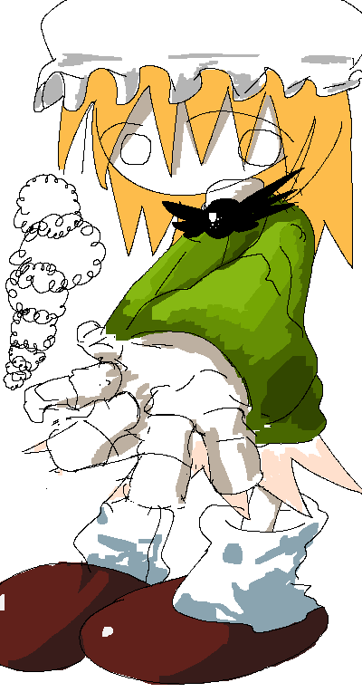

|

|

Amalie
Introduced 11 February 2026
Amalie's Associated Music:
Play Music"Amalie's Theme: Covered in Cumulus Clouds"
View Gallery Page
General Information:
Amalie is the main protagonist of Colormill.
Personality:
Amalie is generally aloof, distant and timid. She can, however, show off an open and affectionate side whenever caught at the right time. She is typically defined by her peers as someone who is particularly easygoing, but has the tendency to come off as painfully simpleminded.
She is characterized as having a low social battery, which can inhibit her ability to get a word in edgewise during certain situations.
Spawn Quirk:
Amalie has the ability to spawn clouds. This is due to her airy, abstract way of thinking, as well as her tendency to daydream. She uses clouds for multiple purposes, primarily to blur her appearance due to shyness, project images onto them, and form three-dimensional shapes.
Occupation:
Amalie is a farmer who works on the outskirts of Cerise's boundaries. She finds comfort in her occupation due to her extended periods of seclusion, although those close to her find it hard to understand the appeal of her work environment.
She is also a photographer.
Relationships:
Historically, Amalie has spent most of her time with Nana. Having known her since they were both young, she has a deep, although somewhat unbalanced, attachment to her.
[Colormill Home]
Project Launched 11 February 2026